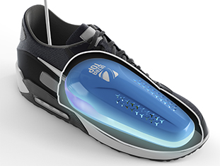

КАК ИСПОЛЬЗОВАТЬ СУШИЛКУ ДЛЯ ОБУВИ
Мокрая обувь – вещь крайне неприятная в любое время года...
Дожди, слякоть, мокрый снег приводят к влаге – это аксиома без вариантов. Даже современные модели сапог и ботинок с водонепроницаемыми мембранами в весенний и осенне-зимний период не являются панацеей от влаги. Да, герметичные кроссовки с модной мембраной не позволят воде проникнуть снаружи. Однако «благодаря» скоплению конденсата (эффект «точки росы») внутри обувь быстро отсыреет. Что бы не заявляли обувные производители.
Промокшая обувь, оставленная на пороге вечером, как правило, самостоятельно до утра не высыхает. Выходить на улицу в хлюпающих башмаках очень некомфортно и вредно. И для здоровья, и для самой обуви.
Отсюда – в общем-то правильная рекомендация производителей: не носить одну пару больше одного дня подряд. Но зачастую так не получается: одни и те же туфли мы носим ежедневно, «без перерывов и выходных».
Даже если имеется возможность обуть новую пару и предоставить вчерашним кроссовкам или кедам заслуженный выходной, в мокром состоянии обувь высушивается очень долго, и деформируется. В ней бурно развиваются патогенные микроорганизмы – грибки и бактерии. Пока наши ботинки «отдыхают», у непрошенных микроскопических гостей – ударный трудовой день в три смены. Ведь во влажной обуви темно, тепло и сыро – для них самое время активно размножаться. Появится как минимум неприятный запах. Да-да, если кто не в курсе, запах «сырости» - это результат жизнедеятельности микроорганизмов. А еще невысушенная обувь может обернуться более серьезными проблемами для ее владельца – спровоцировать развитие микозов, стать причиной болезни суставов.
Популярная сейчас стирка спортивной обуви в машинке – нелегкое испытание для кроссовок. Ведь они не предназначены для такого воздействия. Но главное – мало кто задается вопросом, как быстро высушить кроссовки после стирки. Включать для этого режим «Отжим» категорически запрещено! Могут испортиться и кроссовки, и сама машинка. Но сохнуть обувь после стирки будет до 5-7 суток, что крайне нежелательно.
Преимущество такого метода одно – простота. Недостатков гораздо больше, и они серьезные. При регулярной сушке на радиаторе (под ним тоже) обувь гарантированно испортится через короткий срок. Если не повезет – при первой же сушке могут расклеиться швы и потрескаться кожа. Дорогие кроссовки с мембраной типа GoreTex горячая батарея приведет в негодность за несколько часов. Замшевым сапогам – «подарит» белесые разводы.
Теперь немного теории, почему категорически не рекомендуется сушить промокшую обувь «на батарее». Дело не в том, что батарея «слишком горячая». Дело в законах физики: при наличии температурного градиента влага (в порах, в швах, трещинах и т.д.) перемещается от горячего места к более холодному (капиллярный эффект). Мокрая обувь будет подогреваться снаружи, влага тем самым загоняется внутрь. Да, тепло радиатора дойдет и до внутренностей обуви, но расширяющаяся жидкость успеет основательно ее подпортить. Даже если ваша теплосеть решила сэкономить на отоплении, радиаторы не горячие, а еле теплые, это не отменит капиллярный эффект и не сделает сушку на батарее безопасной. Поэтому Правило № 1 – высушивать обувь нужно только изнутри.

Преимущества – безопасность и относительная эффективность. Газетная бумага прекрасно впитывает влагу. Набитая газетами обувь сохраняет форму. Недостатки тоже имеются. Если кроссовки или ботинки сильно промокли, одного «комплекта» газет может и не хватить; понадобится замена на свежую периодику. Добавится не слишком приятный аромат отсыревшей бумаги. Одними газетами быстро высушить кроссовки не получится. А современная жизнь делает «газетную сушку» трудновыполнимой: печатные издания в среднестатистической семье – скорее исключение. Газеты и журналы вытеснены Интернетом и компьютером. Даже бесплатный полиграфический спам в почтовом ящике «с программкой ТВ на неделю» - уже редкость. С такими современными реалиями порекомендовать сушку обуви с помощью газет можно только во время предвыборных кампаний – недостатка в макулатуре не будет.
Применяются и более экзотические методы борьбы с промокшими башмаками – высушивание феном (пылесосом, вентилятором), использование соли, силикагеля и даже наполнителя для кошачьего туалета. Взвешивать «за и против» таких интересных способов мы не станем. Констатируем лишь факт: мокрая обувь – не просто бытовая житейская мелочь. Это проблема, требующая решения для абсолютного большинства из нас. А если беспокоит неприятный запах, грибок на ногах – решение должно быть эффективным и правильным.
Для быстрого высушивания обуви появились в продаже популярные электросушилки.
Бюджетный вариант – «петли» – рекомендовать не станем: уж лучше сушите на батарее!
Будет безопаснее в противопожарном плане.
А вот инновационные сушилки премиум-класса УльтраТОП® позволят Вам забыть и о сушке на батарее,
и о скомканной бумаге, и вообще о промокших сапогах, ботинках и кроссовках.